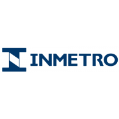

Engenheiro de Software Junior
Dez 2024 - atual
Como Engenheiro de Software Junior na Rede, continuo atuando no desenvolvimento e manutenção do sistema de CRM da empresa, com foco em soluções Salesforce. Nesta posição, assumo maior responsabilidade técnica, liderando iniciativas de otimização de código, implementando best practices de desenvolvimento e mentorando novos membros da equipe.
Trabalho ativamente na arquitetura de soluções complexas utilizando Apex, Lightning Web Components, e Flow, além de integrar sistemas externos via APIs REST. Também atuo com AWS Cloud Computing, utilizando Go e Python para desenvolver microserviços e automatizar processos críticos de negócio, garantindo escalabilidade e performance dos sistemas.
Estágio de Desenvolvedor de Software
Junho 2023 - Dezembro 2024
Minha jornada na Rede começou em junho de 2023 como estagiário, atuando como Desenvolvedor Salesforce. Nesse período, desenvolvi funcionalidades para o aplicativo de CRM (Customer Relationship Management) da empresa, adquirindo conhecimento profundo sobre Apex, Visualforce, SOQL, Flow e LWCs (Lightning Web Components).
Esta experiência me proporcionou compreensão clara do processo de desenvolvimento de software em uma grande corporação, incluindo testes integrados, integração de sistemas e o manejo de vastas quantidades de dados. Colaborei com diversas equipes e aprendi a trabalhar com metodologias ágeis, versionamento de código e processos de CI/CD.
Ferramentas:
- Salesforce Apex, LWC, SOQL, SOSL, Flow, Aura Components, APIs (REST / SOAP), Salesforce DX (SFDX), Flosum
- AWS EC2, S3, VPC (Virtual Private Cloud), RDS (Relational Database Service), Lambda, DynamoDB, CloudWatch
- Grafana, Kubernetes, Docker, Datadog, Terraform
- Confluence, IUClick, IUSolutions, SharePoint
Estágio no Itaú-Unibanco
Dez 2022 - Maio 2023
O meu primeiro estágio foi no Itaú Unibanco, teve início em dezembro de 2022, onde
atuei como Estagiário em Risco de Crédito. Durante esse período, eu
desempenhei um papel crucial na modelagem e monitoramento de parâmetros de risco
no Itaú BBA.
Neste meu primeiro estágio eu realizei a modelagem, o monitoramento e
automarização de parâmetros de risco utilizando Python, Mitigação de LGD para operações garantidas,
Monitoramento de esteiras de provisão BRGAAP, MB, TVM, Câmbio e IFRS9 e a criação de relatórios,
apresentações, gráficos visuais, views, dashboards e testes estatísticos utilizando SQL, VBA e Excel.
Ferramentas:
- Excel, PowerPoint, Outlook, Word, VBA
- Python, SQL
- SAS, Teradata, DBeaver, Confluence

Bolsa de Pesquisa - Inmetro
Abr 2022 - Abr 2023
Durante a minha bolsa de pesquisa no Inmetro como Desenvolvedor de Aplicativos em
Shiny R, de abril de 2022 a abril de 2023, desenvolvi software para automatizar análises de machine learning em R,
Python, Javascript, HTML e CSS. Colaborei na gestão de bases de dados e na criação de scripts
para a manipulação de dados e geração de gráficos personalizados. Também desenvolvi rotinas de testes
para validar algoritmos de machine learning e o tratamento de dados para torna-los próprios para
serem utilizados.
Essa experiência foi muito enriquecedora e ampliou bastante meus
conhecimentos em análise de dados, testes estatísticos, machine learning, inteligência artificial e
principalmente em desenvolvimento de software, onde este foi meu primeiro desenvolvimento, onde trabalhei com
praticamente 100% do backend e frontend, e eu pude aprender muito.
Ferramentas:
- Python, R, RShiny, JavaScript, HTML, CSS
- WebScrapping com Selenium, e Api's do Google, Twitter e Facebook
- Excel
Graduação em Sistemas de Informação - USP
Jan 2020 - atual
A Universidade de São Paulo me proporcionou uma formação sólida em Sistemas de
Informação, onde eu pude aprender sobre diversas áreas da computação, tive uma boa formação em
matemática, física, estatística, algoritmos e lógica de programação, além de me ensinar a ser bem
autodidata.
Tive a oportunidade de trabalhar com diversas linguagens de programação, diversas
técnicas, tecnologias e softwares, e tive
a oportunidade de trabalhar com diversos projetos que usavam tanto a teoria quanto a prática.
Além disso, a USP proporciona diversos eventos, palestras, workshops e competições de
programação, além de ter uma grande biblioteca e diversos cursos inclusos com o curso.
Por fim, a USP também me proporcionou cursos de administração, economia e marketing,
que me ajudaram a ter uma visão mais ampla do mercado de trabalho.
Ferramentas e Conhecimentos:
- C, C++, Java, Python, R, Julia, NodeJS, SQL, PostgreSQL, Oracle, OpenMP, Assembly x86, Bash, Lua
- GitHub, GitLab, JetBrains IDE, Sistema Linux
- Matemática Discreta, Orientação à Objetos, Análise de Algoritmos e Estruturas de Dados
- Cálculo, Estatísticca e Geometria Analítica, Programação em Nuvem, Programação Paralela
- IHC, Redes de Computadores, Banco de Dados, Inteligência Artificial e Ciência de Dados
- Marketing, Administração, e Economia